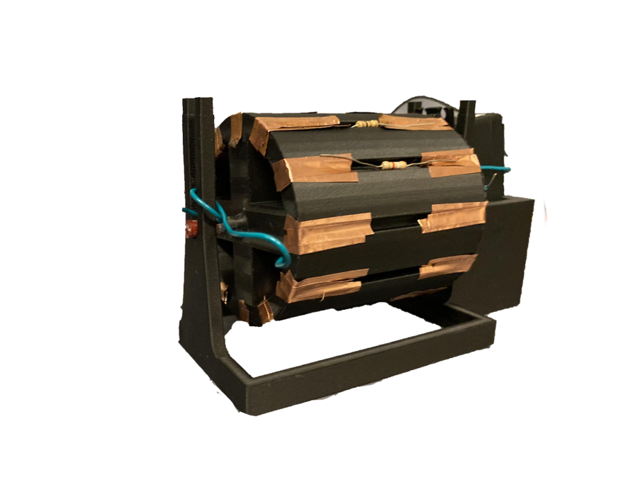

Terrell Parker
CEO & Founder
Auston Terrell Parker, son of Edward Parker and Valerie Parker, is a native of Cary N.C. Auston graduated from Panther Creek High School, where he was a member of the varsity baseball team. He is an active in his community, volunteering at a local food bank and the Miracle League of the Triangle serving individuals with special needs. Auston plans to major in physics and mechanical engineering.
Projects
Brick House

Renovated

Barn House